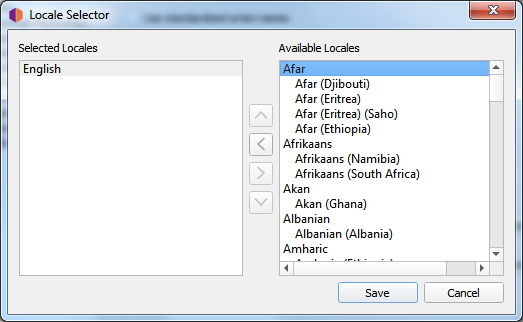
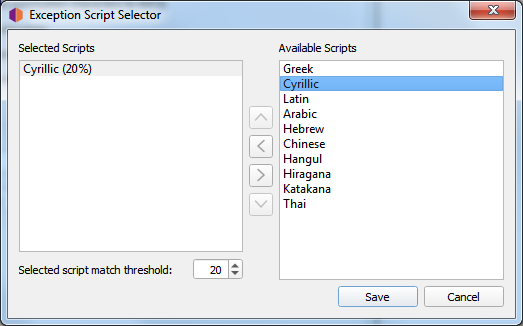

Metadata Options

Translate artist names to this locale where possible
When checked, Picard will check each of the selected locales in order to see whether an artist has an alias for that locale. If it does, Picard will use that alias instead of the artist name when tagging. For example, if you have selected locales of “English (Canadian)” and “English (US)”, and there are aliases for “English (US)”, “English” and “Greek”, then the “English (US)” alias will be used.
Note that Picard will attempt to use the first exact match first. For example, if you have selected locales of “English (Canadian)”, “English (US)” and “Greek, and there are aliases for “English” and “Greek”, then the “Greek” alias will be used.
If there are no exact matches to any of the selected locales, then Picard will attempt to find a match based on the root locale. For example, if you have selected locales of “English (Canadian)”, “English (US)” and “Greek (Cyprus)”, and there are aliases for “English (UK)” and “Greek”, then the “English (UK)” alias will be used.
When “English” is the selected locale, the artist sort name (which is, by Style Guideline, stored in Latin script) is used as a fallback if there is no English alias.
To select which locales to use, click the Select… button beside the list of selected locales. This will bring up a new dialog window where you can add, remove or reorder your list of selected locales.
Once you are satisfied with your selections, click the Save button to transfer the list to your option settings and close the dialog. Note that the changes will not be saved permanently until you click the Make It So! button.
{kind=link}
Ignore artist name translation for script
Sometimes you may not want to have the artist names translated if they appear in a certain character set script. When checked, this option will tell Picard to not perform the artist name translation if it is written using one of the selected scripts.
Each selected script includes a matching threshold value used to determine if that script should be used. When an artist name is evaluated to determine if it matches one of your selected scripts, it is first parsed to determine which scripts are represented in the name, and what weighted percentage of the name belongs to each script. Then each of your selected scripts are checked, and if the name contains characters belonging to the script and the percentage of script characters in the name meets or exceeds the match threshold specified for the script, then the artist name will not be translated.
For example, if “Translate artist names” is enabled with the locale set to “English”, and you enable “Ignore artist name translation” with the scripts set to “Greek (30%)” and “Cyrillic (50%)”, any artist names that contain 30% Greek characters or 50% Cyrillic characters will not be translated and will appear in their origin form.
To select which character set scripts to use and their weighting thresholds, click the Select… button beside the list of selected scripts. This will bring up a new dialog window where you can add, edit or remove items in your list of selected scripts.
Once you are satisfied with your selections, click the Save button to transfer the list to your option settings and close the dialog. Note that the changes will not be saved permanently until you click the Make It So! button.
{kind=link}
Use standardized artist names
Check to only use standard Artist names, rather than Artist Credits which may differ slightly across tracks and releases.
Note
If the “Translate artist names” option above is also checked, it will override this option if a suitable alias is found.
Use standardized instrument and vocal credits
Check to only use standard names for instruments and vocals in performer relationships. Uncheck to use the instruments and vocals as credited in the relationship.
Convert Unicode punctuation characters to ASCII
Converts Unicode punctuation characters in MusicBrainz data to ASCII for consistent use of punctuation in tags. For example, right single quotation marks are converted to ASCII apostrophes (‘), and horizontal ellipses are converted to three full stops (…).
Use release relationships
Check to retrieve and write release-level relationships (e.g.: URLs, composer, lyricist, performer, conductor, or DJ mixer) to your files. You must have this enabled to use Picard to retrieve cover art.
Use track relationships
Check to write track-level relationships (e.g.: composer, lyricist, performer, or remixer) to your files.
Guess track number and title from filename if empty
If checked, Picard will try to guess a file’s track number or title from the filename if the
tracknumberortitletag is empty.
Various artists
Choose how you want the “Various Artists” artist spelled.
Standalone recordings
Choose how you want “Standalone recordings” to be grouped.
See also
Details: Preferred Releases / Genres / Ratings